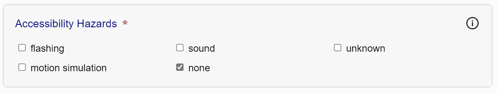

Discovery Metadata
After completing the accessibility evaluation, the next step is to review the discovery metadata in the Discovery Metadata tab.
Each of the fields in this tab corresponds to a schema.org accessibility metadata property. The fields are pre-populated, whenever possible, from information in the Ace JSON report, but should always be verified for accuracy (some metadata may be inferred, as noted in the Ace report loading step).
Note: If accessibility metadata is already present in the publication, the SMART tool will not attempt to infer additional metadata.
The purpose of each discovery field is described in the following list:
- Accessibility Features
-
This field describes any features or affordances included in the publication that improve its accessibility for readers with different preferred modalities.
Figure 2 — The accessibility features field contains checkboxes corresponding to the features a publication might contain. 
Additional features can be added by clicking the "Add custom field" link. Be sure to follow the naming convention for accessibility metadata when adding new features (the human-readable names used in the SMART tool are only a convenience; they are not the values used in the output metadata).
More information about accessibility features is available from the Schema.org Accessibility Properties for Discoverability Vocabulary and the EPUB Accessibility techniques.
- Accessibility Hazard
-
This field identifies any potential hazards in the content, such as a seizure risk from flashing content.
Figure 3 — The accessibility hazard field contains checkboxes for each hazard a publication might contain. More information about accessibility hazards is available from the Schema.org Accessibility Properties for Discoverability Vocabulary and the EPUB Accessibility techniques.
- Access Modes
-
Identifies the perceptual systems or cognitive faculties the reader requires to perceive the content. For example, visual is checked if there are images or video, textual if there is text content, auditory if there is audio, etc.
Figure 4 — The access modes field contains checkboxes for each mode necessary to read the information contained in a publication. 
More information about access modes is available from the Schema.org Accessibility Properties for Discoverability Vocabulary and the EPUB Accessibility techniques.
- Sufficient Access Modes
-
Identifies one or more sets of access modes through which a reader can understand the full content of the publication.
Unlike the list of access modes, which only accounts for the default nature of the content, sufficient access modes take into account any features or affordances that allow the original content to be consumed in an alternative form. A publication with text and images, for example, may have a purely textual sufficient access mode if text equivalents and descriptions are provided for all visual content.
Figure 5 — The sufficient access modes field contains sets of checkboxes. Each set allows you to specify a combination of one or more access modes that allow the information to be fully consumed. 
Authors can always include at least one sufficient access mode set that matches all the listed access modes.
More information about sufficient access modes is available from the Schema.org Accessibility Properties for Discoverability Vocabulary and the EPUB Accessibility techniques.
- Accessibility Summary
-
Use this field to provide a short description of the overall accessibility of the publication, or of its failings.
Figure 6 — The accessibility summary field contains a text box that allows the free-form entry of a summary. 
If you click the "Suggest a summary" link at the top of the field, the SMART tool will insert a summary for you based on the result of your conformance review and any metadata specified.
More information about accessibility summaries is available from the Schema.org Accessibility Properties for Discoverability Vocabulary and the EPUB Accessibility techniques.
If the publication did not contain discovery metadata, or if you made changes to what was found, click the "Generate" button at the bottom of the tab to create a new set of metadata tags.
Metadata compatible with the EPUB version you specified when setting the publication information will be generated and made available to copy and paste from a new dialog box.
If any validation errors are encountered, an alert dialog will first appear asking you if you wish to continue or exit and check the problems. Errors are listed in the message panel that opens at the bottom of the page.
Note: It is recommended you include discovery metadata even if the publication fails conformance testing. It is a required component of the EPUB Accessibility specification.